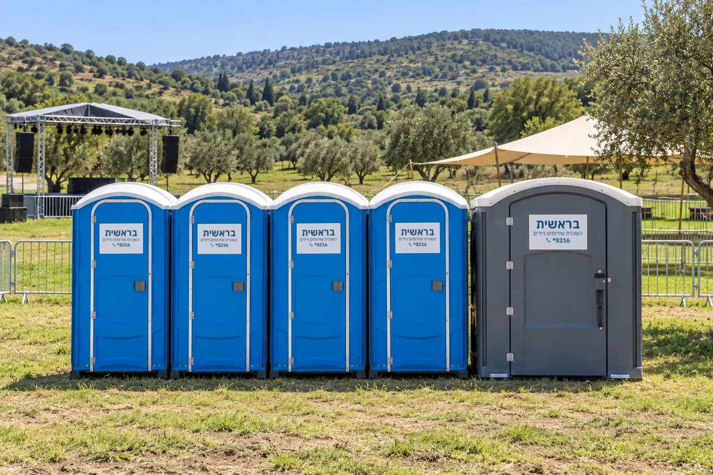

Mobile toilet rental in the North
An upscale wedding in the Galilee, a company event in the Golan, a festival on the shore of the Sea of Galilee or a remote construction site: standard toilet units, luxury restroom trailers and accessible units, delivered to any location in the North.
Events in nature and a building boom
At any given moment, dozens and hundreds of events take place in the North, making use of the nature of the Galilee and the Golan. Alongside them, the building boom has spread many construction sites across the region. Mobile toilets meet both needs: at events in the heart of nature and at construction sites.
Our logistics network reaches any location in the North, from city centers to remote construction sites and far-flung points in the field.


From a standard unit to a luxury trailer
Standard toilet unit
A self-contained unit with natural ventilation openings. Requires no connection of any kind and can be placed at any remote spot.
Luxury trailer
2, 4 or 6 units, divided into women's and men's wings; in the 6-unit models, a separate lobby in each wing. Air conditioning, interior and exterior LED lighting and a sound system. Requires an electrical connection (220V on a separate phase), which can be supplied with an added generator.
Accessible unit
The 4-unit trailer has a dedicated accessible unit with an electric lift, wider than usual, with grab rails and an adapted maneuvering space.
Tips from us
Think generously. The accepted formula is 1-2 units per 100 participants at an event lasting a few hours. An extra unit is better than long queues.
Plan for maintenance. A small event lasting a few hours usually does not need ongoing maintenance. For a large event, a long project or an upscale event, make sure the service includes ongoing maintenance and cleaning.
Large events we supported in the North
Meron, Lag BaOmer
Mount Meron compound and access routes, about 500,000 worshippers and visitors. Hundreds of mobile toilet units, logistics management and continuous round-the-clock maintenance.
Acre Festival
The Old City of Acre, about 25,000 visitors over the days of the festival. Dozens of mobile toilet units and ongoing maintenance throughout the event.
Frequently asked questions about mobile toilets in the North
What are the main differences between a standard unit and a luxury trailer?
The difference lies mainly in the level of hospitality and fittings. A standard unit is an efficient, basic solution that suits any terrain without special preparation. A luxury trailer offers air conditioning, background music, LED lighting, electronic faucets and separate women's and men's units.
How does renting mobile toilets save money?
Mobile toilets make it possible to hold events in unique locations in nature, without the rent of an event venue, and eliminate the need to build permanent plumbing and sewage infrastructure.
What solutions exist for people with disabilities in the luxury equipment?
The 4-unit trailer includes a dedicated accessible unit with an electric lift. The unit is wider than usual and includes grab rails and an adapted maneuvering space.
What does the maintenance service include during events in the North?
A dedicated staff member for ongoing cleaning and checking the units, hermetic pumping of the holding tank and replenishment of consumables. Can be upgraded with automatic fragrance dispensers.
Planning an event or project in the North? Call *8216. We will be happy to put together a quotation for you.